밀덕을 위한 레미제라블
게시: 2020-05-28T06:30:10+09:00
이미 알려져 있는 바입니다만, 레미제라블은 헐리우드 영화가 아니라 영국 영화입니다. 그리고 원작 뮤지컬도 브로드웨이 원작이 아니라 영국 것이고요. 그래서 출연진들 대부분도 영국인들이고, 촬영지도 영국 런던입니다.
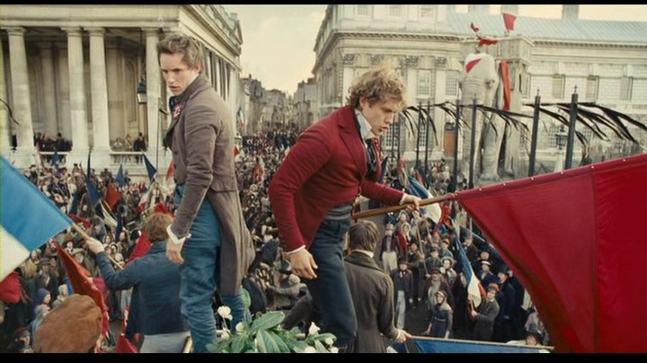
(저 배경 건물들이 파리의 어디냐고요 ? 삼색기가 휘날린다고 다 파리가 아닙니다. 저기 런던입니다.)
가령 'Look down - Paris' 부분에서 가브로슈가 왠 부자집 마차 창문에 올라가서 'How do you do, my name is Gavroche' 하고 노래를 하는 장면에서, 가사 내용 중에 'What the hell' 이라고 하는 부분이 있습니다. 그런데 이 가브로슈 역할을 맡은 다니엘 허들스톤이라는 꼬마 배우는 이것을 What the 'ell 이라고 h 발음을 빼고 부릅니다. 덕분에 정관사 'the'도 '더'가 아니라 '디'로 발음하지요. 전형적인 영국 사투리입니다. 나폴레옹 시절의 영국 해군 이야기를 그린 Patrick O'Brian의 해양 소설 시리즈인 Aubrey & Maturin 시리즈에도 그렇게 h 발음이 빠진 발음을 하는 수병들의 대화가 많이 나오지요. 일부러 토속적인 느낌을 주려고 그렇게 발음하도록 시켰겠지요. 하지만 시대 배경이 프랑스인데 영국 사투리가 나오다니 ! 더군다나 영국인 배우들이 'Vive la France ! Vive la France !' 라고 외치는 것을 보니 참 기분이 묘하더군요. 아마 프랑스 사람들도 그렇게 느끼지 않았을까 싶어요.
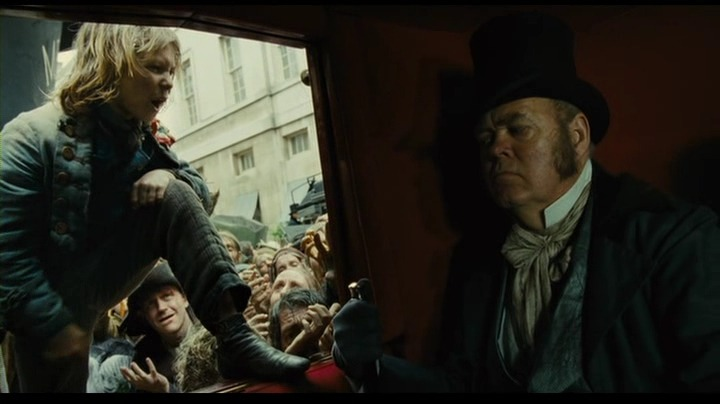
(바로 이 장면)
하지만 더 깊숙이 알고보니 이 'Les Miserables'은 원래 프랑스 뮤지컬이랍니다. 파리에서 1980년도에 초연이 이루어졌는데, 영국인 제작자인 카메론 매킨토시가 그 공연을 보고 하도 감명을 받아서 그것을 1985년에 런던에서 영어판으로 다시 만든 것이라고 하네요. 작사가인 쇤베르그(Claude-Michel Schönberg)나 작사가인 부빌(Alain Boublil) 및 나텔 (Jean-Marc Natel) 모두 프랑스인입니다. 영어 가사는 크레츠머(Herbert Kretzmer)가 불어 가사를 개작해서 만든 것이라고 합니다. 그러다보니, 레미제라블의 가사 내용 중에는 프랑스 국가인 라 마르세예즈에서 따온 듯한 부분이 상당히 많습니다. (라 마르세예즈에 대해서는 라 마르세예즈 (La Marseillaise), 무기를 들라 시민들이여 ! http://blog.daum.net/nasica/5680277 울 참조하십시요.)
그런데 이렇게 프랑스적인 이야기가 전세계적으로 히트를 친 것은 어디까지나 영국인들에 의해서였습니다. 아무래도 영어라는 사실상의 세계 공용어에 의한 가사 전달력 때문이겠지요. 제가 이어나가고 있는 이 나폴레옹 관련 블로그만 해도, 저는 프랑스 측 자료가 아니라 대부분, 아니 100% 영국 및 미국 자료를 보고 포스팅하고 있는 형편입니다. 가령 나폴레옹 전쟁이라는 아주 매력적인 소재에 대해서, 영국에서는 Hornblower 시리즈나 Sharpe 시리즈가 나와서 아주 유명한 것에 비해, 이런 종류의 소설이 프랑스에서 나온 것이 있나요 ? 사실 있습니다. 전에 도서관에서 한글판으로 나온 전투 (La Bataille)라는 프랑스 소설을 빌려 읽었는데, 바로 나폴레옹의 아스페른-에슬링 전투를 배경으로 한 전쟁 소설이었습니다. 그런데... 재미가 없더라구요 ! 그래서 프랑스 소설류가 별로 유명하지 않은 모양입니다. 확실히 대중적인 흥행 면에서는 앵글로색슨 족의 감각이 골 족보다는 더 나은 모양입니다.
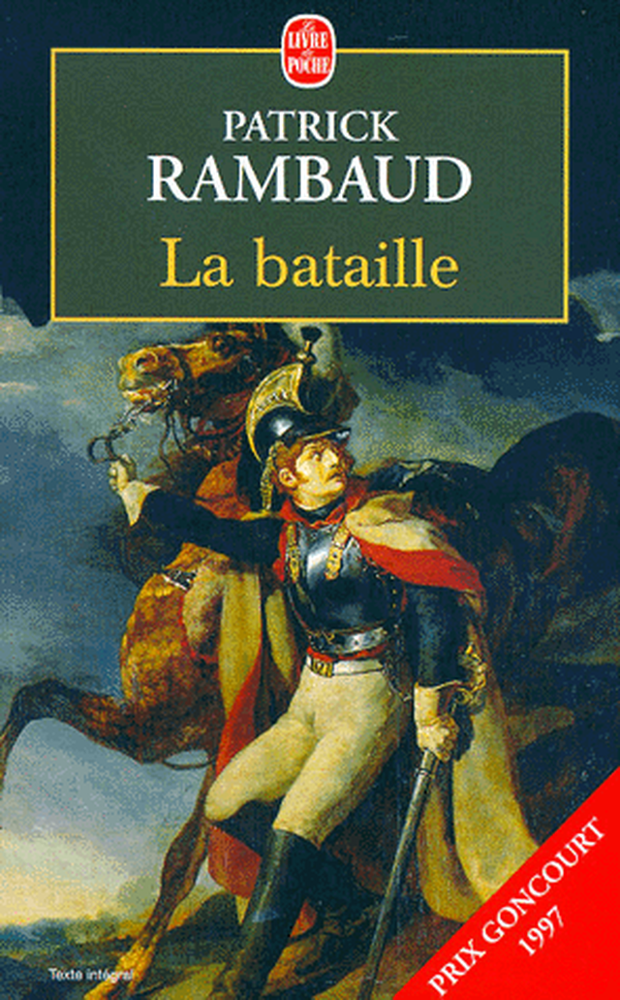
(어, 지금 찾아보니 저 파트리크 랭보의 소설 'La Bataille'는 그래도 공쿠르 상 수상작이네요 ?)
2012년에 영화화된 레미제라블도, 전투 민족 앵글로색슨이 만든 덕분인지, 의외로 밀리터리 오덕적인 면이 매우 충실하게 표현되어 있어서 즐거웠습니다. 물론 다소 어설픈 곳도 눈에 띄였습니다만, 뮤지컬 영화치고는 (원작에도 거의 묘사가 안 된 부분인데도) 정말 세세한 부분까지 잘 표현했구나 싶은 점들이 정말 많더라구요. 제 블로그를 예전부터 출입하시던 분들은 이미 잘 아시는 내용이겠습니다만, 레미제라블 키워드 검색 덕분에 새로 들어오시는 분들을 위해서 기본적인 당시 무기류 등에 대해서 다시 한번 설명을 드리겠습니다.
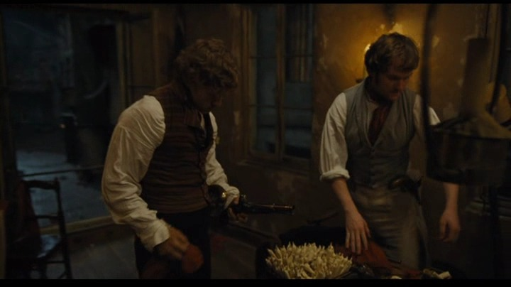
(저 탁자 위의 저 담배꽁초 같은 것들의 정체는 ?)
먼저, 레미제라블에 나오는 수많은 노래들 중 하일라이트 부분이라고 할 수 있는 'One Day More' 부분에서 나온 저 장면부터 보시지요. 저기 보면 앙졸라가 다른 청년과 함께 무장 봉기를 준비할 때, 테이블 위에 놓인 그릇에 뭔가 담배 꽁초 비슷한 것이 잔뜩 꽂혀 있는 것이 있는데, 그걸 보시고 제 블로그에 댓글 다신 분이 있으시더군요. 저게 과연 무엇일까요 ? 바로 탄약포를 만드는 장면입니다.
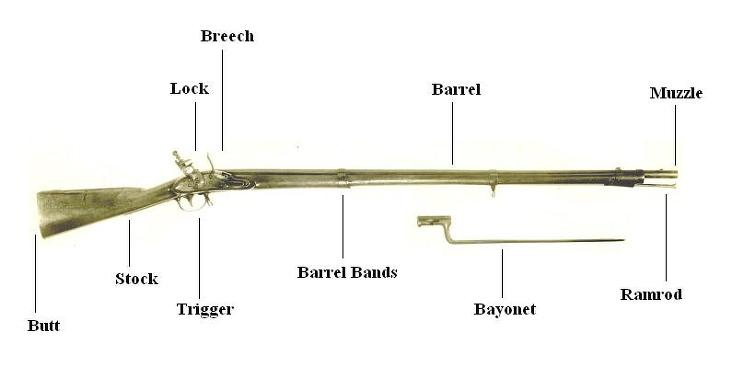
(총구에서 장탄을 하면 muzzle loading, 격발 장치 쪽에서 장탄을 하면 breech loading 방식이라고 합니다. 우리말로는 전장식, 후장식이라고 하지요.)
당시 총은 머스켓(musket)이라고 하는 종류가 대세였습니다. 머스켓이라고 하면 일반적으로는 총강 내에 강선 (rifle)이 새겨져 있지 않은, 즉 smooth bore 총신에, 탄약을 총신 뒤쪽에서 약실을 개방하고 넣는 것이 아니라, 총구에서 화약과 총알을 따로 집어 넣게 되어 있는, 즉 muzzle-loading 방식의 총을 뜻합니다.
이 머스켓 소총의 특징은 낮은 명중률과 짧은 사정거리도 있습니다만, 높은 불발률과 긴 재장전 시간이라는 점도 있습니다. 한마디로 몹쓸 물건이었지요. 하지만 덕분에 당시 병사들의 군복은 위장색이 아니라 빨간색 파란색이 많이 들어가는 화려한 색깔이 되었다는 긍정적인 효과도 있었습니다. 그런 총 앞에서는 굳이 엄폐나 은폐가 별로 필요없었으니까요. 이 머스켓 소총의 재장전에 시간이 오래 걸린다고 했는데, 그 이유를 보시겠습니다. 먼저, 당시 탄약은 요즘처럼 금속제 탄피에 무연 화약과 뇌관이 일체화되어있는 단단하고 예쁘장한 물건이 아니었습니다. 먼저, 요즘 총알(bullet)은 겉은 구리 합금 계열이고 속은 납으로 채워져 있는 원뿔 모양인 것에 비해, 이 머스켓 총알은 그냥 납으로 된 둥근 공 모양이었습니다. 그래서 당시 총알은 보통 bullet이 아니라 musket ball이라고 불렀습니다.
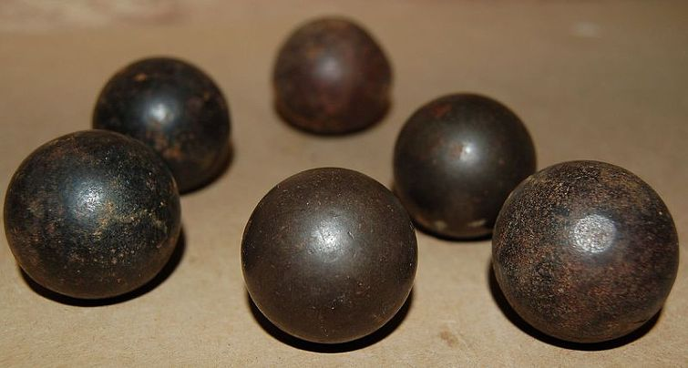
(당시의 머스켓 볼들... 캐논 볼들도 크기만 달랐지 사실 똑같았습니다. 속에 화약이 든 것이 아니라 쇠로 꽉 차있었지요.)
모히칸 족의 최후라는 소설을 보신 분은 인디언들이 '뿔통에 넘치는 화약'을 몹시 원하는 장면을 많이 보셨을텐데, 16~17세기에는 이렇게 총알과 화약을 따로 들고다니기도 했습니다. 하지만 이렇게 총알과 화약을 따로 보관하면 이래저래 불편한 점이 많았습니다. 가령 1회 사격에 적당한 화약량을 그때그때 정해야 한다는 것이지요. 이 모히칸 족의 최후에도 주인공인 호크아이가 모히칸 웅카스에게 '넌 항상 화약을 너무 많이 넣는구나, 그러면 반동이 심해져서 총알이 위로 날아간단다' 하고 나무라는 장면이 나옵니다. 이처럼 특히 미숙한 병사들에게는 1회 사격에 적절한 화약을 미리 포장해서 나누어주는 것이 더 좋았습니다. 그래서 나온 것이 총알과 화약이 일체화된 탄약통, 즉 cartridge라는 것입니다.
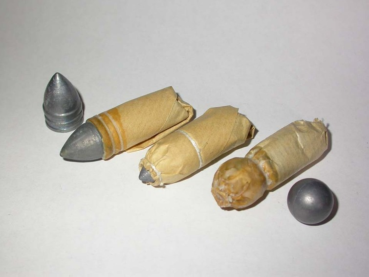
(맨 오른쪽이 나폴레옹 및 레미제라블 시대의 탄약포입니다. 저 원뿔형 탄환이 든 탄약포는 후에 나온 미니에 Miniet 탄환입니다.)
그런데 그런 탄약통(...이라기보다는 탄약포)의 재질로는 뭐가 좋았을까요 ? 바로 종이만한 물건이 없었습니다. 갈대 줄기보다 질기고, 가죽보다 싸고, 헝겊보다는 쉽게 찢을 수 있고, 밀랍이나 기름을 먹이면 어느 정도 방수 효과도 있었지요. 제조 방법도 간단했습니다. 먼저, 종이를 담배처럼 긴 원통형으로 말고, 한쪽을 접착제 또는 실로 묶은 뒤, 아직 열린 쪽으로 1회 발사에 적당한 화약을 부어 넣고, 그 위에 총알을 넣고, 열린 끝을 실로 묶은 뒤, 총알과 화약의 경계 부분을 다시 한번 실로 묶어주면 되었습니다.
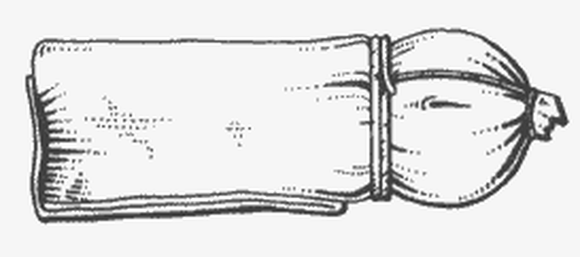
(이렇게요)
잠깐, 보아하니 이 탄약포에는 충격식 뇌관이 없는데, 그러면 격발은 어떻게 하냐고요 ? 이제 보시겠습니다. 먼저, 당시 머스켓 소총의 격발은 부싯돌 방식이었습니다. 여기서 잠시 레미제라블 본문을 보시겠습니다.
----------------------------------------------
(무장 봉기 당일, 가브로슈는 어느 여자 고물상이 진열해 놓은 낡은 기병 권총 한자루를 잽싸게 훔쳐서 그걸 들고 혁명에 참여하러 갑니다.)
가로수 길에서 그는 권총에 격철이 없는 것을 알았다. (Sur le boulevard il s'aperçut que le pistolet n'avait pas de chien.)
...중략...
그러다가 가브로슈는 갑자기 우울해졌다. 권총의 마음을 움직여 보려는 듯이 그는 책망하는 얼굴로 권총을 바라보았다, "나는 나간다. 그러나 너는 나가지 않는구나." 하고 그는 말했다. 한마리의 개는 또 한마리의 개(즉 격철)에서 사람의 마음을 딴 데로 돌릴 수 있다. 빼빼 마른 복슬개 한 마리가 지나갔다. 가브로슈는 측은한 생각이 들었다.
----------------------------------------------
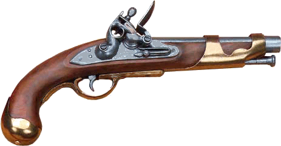
(이렇게 멋진 권총에서 어느 부분이 빠진 것인지 짐작이 가시나요 ?)
여기서 말하는 격철이란 원래 불어로는 chien, 즉 멍멍이 개입니다. 그래서 저 위에서도 개를 보고 다른 개를 잊었다고 하는 것입니다. 실은 이 격철이라는 부품의 영어식 이름도 doghead (개의 머리)입니다. 생긴 것도 입이 달린 것이 개를 닮았지요. 이 입으로 부싯돌을 단단히 물게 되어 있거든요. 당시 머스켓 소총은 부싯돌 격발 방식이라고 했는데 (그래서 이름도 flintlock이라고 했지요) 머스켓 소총의 격발 장치, 즉 flintlock 부분은 크게 4가지 부품으로 되어 있었습니다. 격철(doghead), 점화접시(flash pan), 점화덮개(frizzen), 그리고 스프링(spring)이지요.
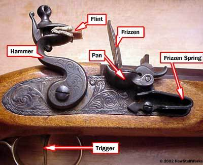
(흠... 스프링 대신 방아쇠를 4대 요소로 넣을 걸 그랬나...)
격발 방식은 다음과 같습니다. 먼저, 방아쇠를 당기면 스프링에 의해 힘을 받은 이 격철이 부싯돌을 점화덮개(frizzen)를 힘차게 때리면서 불꽃을 튕깁니다. 동시에 점화덮개가 격철에 밀려 열리지요. 이 점화덮개는 원래 접화접시(flash pan)을 덮고 있고, 이 점화접시에는 약간의 화약이 담겨 있습니다. 이때 부싯돌에 의해 발생한 불꽃이 이 화약에 닿으면서 작은 폭발이 일어납니다. 이 폭발은 점화접시 바닥에 뚫린 작은 구멍을 통해, 머스켓 소총의 약실로 전파됩니다. 머스켓 소총의 약실에는 주 장약과 머스켓 볼이 들어있는데, 이 작은 폭발이 주 장약에 닿으면 2차 폭발이 일어나면서 머스켓 볼이 발사되는 것입니다. 그러니까 사실 가브로슈의 격철 없는 권총도, 성냥불이 있으면 발사를 할 수는 있긴 했습니다. 임진왜란 이후 우리나라에서 만들어진 전통식 조총은 부싯돌 방식 (flintlock) 까지는 발전하지 못했고, 그 이전 방식인 화승 방식(matchlock)이었지요. 즉, 격철 끝에 천천히 타들어가는 심지(slow match)를 달아놓고 있다가, 방아쇠를 당기면 그 불붙은 심지가 점화접시의 화약에 1차 폭발을 일으키는 방식인 것입니다. 이 방식에는 스프링이 필요없으니까, 훨씬 단순합니다.
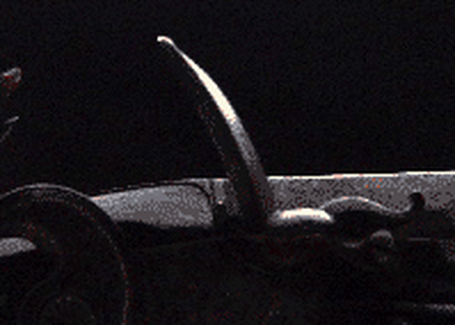
(제가 몇년 전에 머스켓 관련 글을 쓸 때 비해 인터넷에 그림 자료가 엄청나게 많아졌어요.)
이런 부싯돌 격발 방식의 머스켓 소총의 가장 큰 단점은 장전 속도라고 말씀드렸는데요, 그 과정이 어떤지 잠깐 보시지요.
1. 왼손으로 머스켓총을 수평으로 잡고, 격철(doghead, cock)를 한단계 뒤로 당깁니다. 이를 half-cock 위치라고 합니다. 이 상태에서는 방아쇠를 당겨도 격철이 격발되지 않습니다. 그리고 점화덮개를 앞으로 밀어서 들어올립니다.
2. 오른손으로 탄약포를 하나 꺼내 입으로 앞대가리 부분, 즉 머스켓 볼이 든 부분을 입으로 물어 뜯어냅니다. 이때 당연히 총알은 입안에 들어가게 되었는데, 총알 뿐만 아니라 화약도 조금 입에 들어갔지요. (이 때문에 당시 병역을 피하려던 사람들은 앞니 두개를 뽑는 방법을 쓰기도 했습니다. 앞니가 없으면 총을 못 쏘거든요 ! 이에 대해서는 나폴레옹 시절 젊은이들이 앞니를 뽑아야 했던 이유 http://blog.daum.net/nasica/6862352 참조. 또 이때 종이 탄약포에 발린 기름이 소기름이냐 돼지기름이냐에 따라 인도에서 세포이 반란이 촉발되기도 했습니다. 힌두교도는 소기름을, 이슬람교도는 돼지기름을 입에 대서는 안되니까요.)
3. 입에 납으로 된 머스켓 볼을 문 채로, 손에 든 뜯어진 탄약포를 조금 기울여 점화접시에 약간량의 화약을 부어 넣습니다. 이 동작을 priming, 즉 뇌관 장착이라고 합니다. 그리고는 점화덮개를 당겨 닫아서, 점화접시를 가립니다.
4. 이제 왼손으로 잡은 머스켓 총을 수직으로 세워 개머리판을 땅에 닿게 세웁니다.
5. 탄약포의 화약을 모두 총구에 들이붓고, 빈 탄약포 껍질도 밀어넣습니다. 이 빈 종이껍질은 화약을 틀어막는 마개(wadding) 역할을 합니다. 이어서 입에 물고 있던 머스켓 볼을 총구에 뱉습니다.
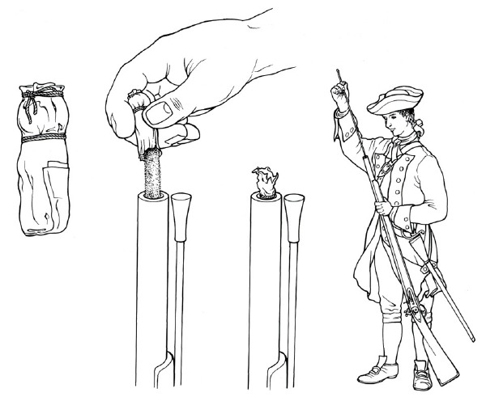
6. 총신 아래에 끼워져 있는 장전봉 (ramrod)을 꺼내어, 총구에 끼워진 빈 탄약포 껍질과 머스켓 볼을 총신 저 속 끝의 약실까지 힘차게 밀어넣습니다. 이때 이미 발포한 뒤라면 총강 내부가 타다 남은 탄약포 껍질이나 화약 찌꺼기에 의해 지저분해진 상태이므로, 이렇게 장전봉으로 총알을 밀어넣는 작업은 꽤 힘든 작업이 되어버립니다. (그래서 당시에는 요즘보다 더 총강 내부를 청소하는 것이 더 중요했습니다.) 이때 빈 탄약포 껍질과 머스켓 볼을 꾹꾹 눌러두지 않으면 화약이 폭발할 때의 가스가 머스켓 볼에 충분히 힘을 실어주지 못합니다.
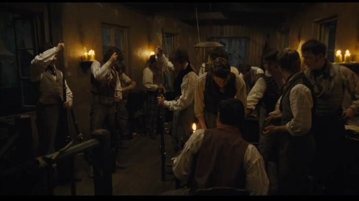
('One Day More' 합창 중의 이 장면은 아마도 장전하는 장면이 아니라 총강 내를 미리 청소해두는 모습인 듯 해요.)
7. 다시 장전봉을 총신 아래의 홈에 끼워 넣습니다.
8. 머스켓 소총을 다시 들어올리고, 격철을 한단계 더 뒤로 당깁니다. 이것이 full-cock 위치이고, 이제 격발이 가능한 상태가 되었습니다.
9. 조준을 하고 방아쇠를 당기면 격철에 끼워진 부싯돌이 점화덮개를 강하게 내리치면서 불꽃이 튀고, 이 불꽃이 점화 접시에 담긴 약간의 화약을 폭발시킵니다. 이 화염이 점화접시 밑부분의 좁은 구멍을 타고 약실에 번져서 약실의 화약을 폭발시키고 총알이 발사됩니다. 이때 점화접시의 불붙은 화약 중 일부는 튀어나와 사수의 뺨에 닿게 되어 따가움과 동시에 시커먼 검댕을 묻히게 되고, 또 총구에서 나오는 화약 연기는 사수의 시야를 거의 완벽하게 가려서 목표물에 명중을 했는지 여부는 알 수가 없게 됩니다.
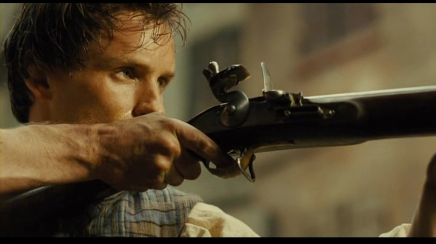 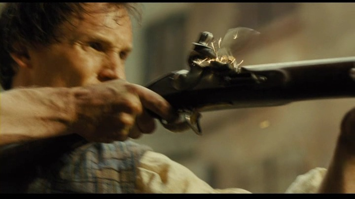 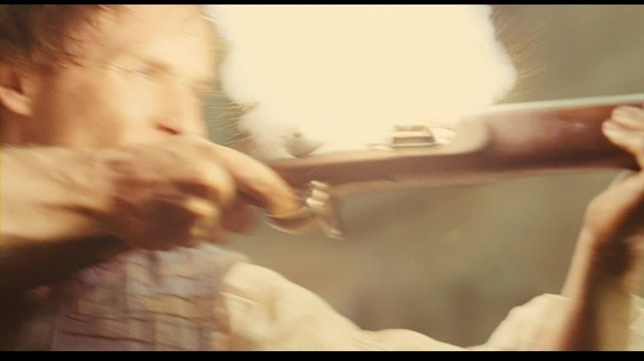
(저렇게 1차로 뇌관 화약이 터질 때도 불꽃이 격렬하게 튀는데, 방아쇠를 당길 때 눈을 감지 않는다면 대단한 용자 !)
당시 잘 훈련된 병사라면 30초에 1발 정도를 이런 식으로 사격할 수 있었습니다. 당시 머스켓 소총의 유효 사거리는 약 70m였는데, 이것이 뜻하는 바는, 70m 거리의 적에게 한발 쏘고 나면 재장전을 하기 전에 적이 자기 코 앞까지 달려들고도 남는다는 뜻이었습니다. 그런 이유로, 저 영화 속의 바리케이드 전투에서는 바리케이드 위의 마리우스가 한발 쏘고 나면 빈 총을 바리케이드 아래의 장발장에게 건네주고, 장발장은 이미 장전해 놓은 다른 총을 마리우스에게 넘겨준 뒤 그 빈 총에 다시 장전을 하는 방식을 썼던 것입니다.
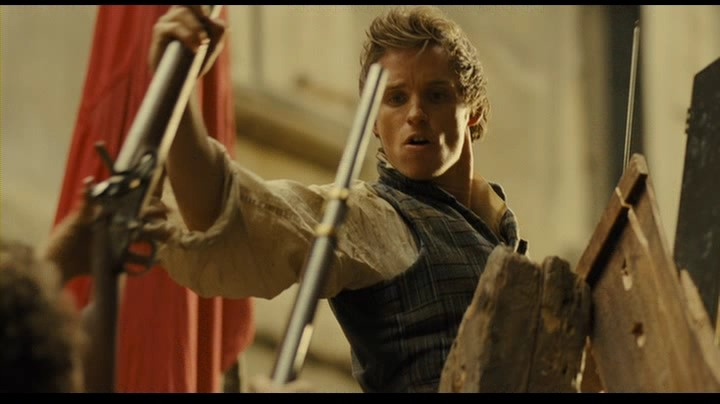 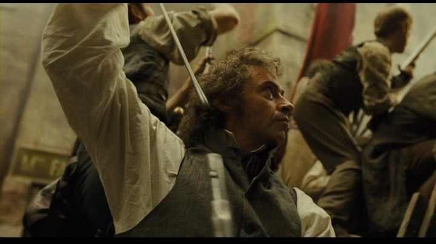
(저렇게 한명은 쏘고, 뒤에서 서너명이 그 빈 총을 재장전 해주는 것이 훨씬 효과적이었지요. 참고로, 영화에서 정부군의 저격병을 쏘아죽이는 것으로 나오는 장발장은 원작 소설에서는 바리케이드에 가서도 전혀 살상을 하지 않습니다. 정부군의 관측병의 철모를 쏘아 떨어뜨려 물러가게 할 뿐이었지요. 누가 '왜 죽이지 않냐' 라고 묻자 아무 대답도 안합니다.)
영화에는 나오지 않습니다만, 원작 소설에서는 앙졸라가 다소 특이한 무기를 소지한 것으로 나옵니다.
Enjolras avait un fusil de chasse à deux coups, Combeferre un fusil de garde national portant un numéro de légion, et dans sa ceinture deux pistolets que sa redingote déboutonnée laissait voir, Jean Prouvaire un vieux mousqueton de cavalerie, Bahorel une carabine. Courfeyrac agitait une canne à épée dégainée.
앙졸라는 2연발 사냥총(un fusil de chasse à deux coups)을, 콩브페르는 부대 번호가 붙어있는 국민방위군(garde national) 소총을 든 것 외에도, 벨트에 두 자루의 권총을 찔러 찬 것이 단추를 푼 코트 밑에 보였다. 장 프루베르는 낡은 기병용 소총을, 바오렐은 머스켓 소총을, 쿠르페이락은 지팡이 속에 감춰진 검을 뽑아내어 휘두르고 있었다.
어떻게 당시에 2연발 소총이 있었을까요 ? 간단합니다. 총신을 2개 나란히 붙여놓으면 됩니다. 물론 방아쇠를 비롯한 격발장치(flintlock)도 각각 따로 붙어 있는 물건이지요. 당연히 이 총은 거의 2배 가까이 무거웠고, 또 장전하는데도 시간이 2배가 걸렸기 때문에 군용으로는 낙제점이었습니다. 하지만 오히려 이런 총은 사냥용으로는 인기가 좋았습니다. 최소한 자신에게 덤벼드는 사자나 늑대를 상대할 때 한발이 빗나가도 한발 더 쏠 수 있었으니까요.
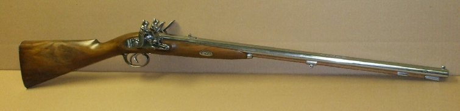 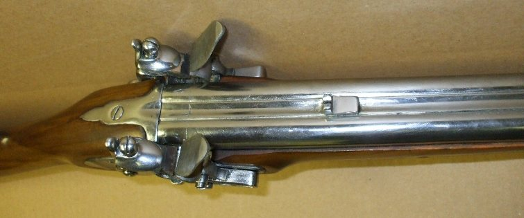
(앙졸라의 무기, 2연발 플린트락입니다. 앙졸라는 집이 부자라서 이런 무기도 있나 봅니다.)
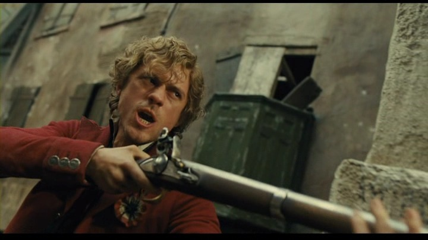
(영화 속에서는 앙졸라는 그냥 평범한 머스켓 소총을 들고 나오지요.)
그래서, 나중에 바리케이드를 만들고 났을 때, 가브로슈는 앙졸라의 총을 탐냅니다. 계속 자기에게도 총을 달라고 가브로슈가 떼를 쓰자, 콩브페르는 너 같은 어린애에게 총을 줄 수는 없다고 했고, 앙졸라는 "어른들 모두에게 총이 주어지고도 남으면 너에게도 주겠다"라고 하지요. 그런데 가브로슈는 앙졸라에게 "당신이 나보다 먼저 죽으면 당신 총은 내꺼야" 라고 대꾸를 하지요. 그 다음이 문제인데...
--Gamin! dit Enjolras.
--Blanc-bec! dit Gavroche.
이 부분을 민음사 레미제라블에서는 이렇게 번역했습니다. (Blanc-bec이란 흰 부리, 즉 새의 새끼를 뜻하는 표현입니다.)
"이 새끼가 !" 하고 앙졸라는 말했다.
"이 풋내기가 !" 하고 가브로슈도 말했다.
'이 새끼가' 라니요 ! 우리의 앙졸라가 꼬마에게 쌍욕을 하다니 ! 이건 앙졸라의 이미지하고는 너무 안 맞는 것 아닙니까 ? 저 gamin이라는 것은 영어로는 kid, 주로 나쁜 kid를 말하는 것이라서, 영문판에서는 이를 Urchin 정도로 해석을 해놓았습니다. 그러니 다음과 같이 번역을 하는 것이 좋지 않았을까 해요.
"이 망나니 녀석 !" 앙졸라가 말했다.
"이 애송이 녀석 !" 가브로슈도 지지 않고 대꾸했다. ()
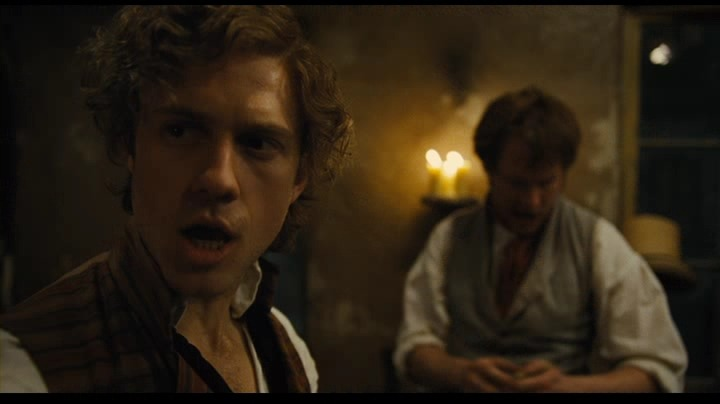

('Red and Black' 중에서 마리우스에게 'Who cares about you lonely soul?' 이라고 노래하는 앙졸라... 여기서 그의 이를 보면 상당히 누런 것을 볼 수 있는데, https://www.youtube.com/watch?v=PSEZ2AFIfFI 에 나오는 인터뷰를 보면 그 사연이 나옵니다. 원래 그의 이는 정말 새하얀 색이었는데, 첫 카메라 테스트를 해보니 그의 눈부신 치아가 'woud not fly' 하더래요. 그래서 촬영 당시에는 분장사가 매일 시간을 들여서 더럽게 칠을 했다고 합니다.)
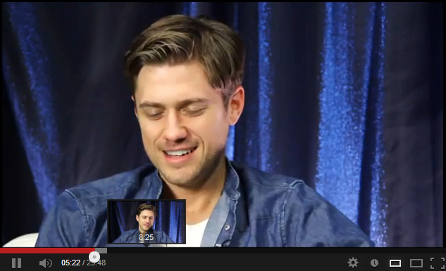
(이 인터뷰를 보면 정말 아론 트베이트의 눈부시게 하얀 이를 자주 보실 수 있습니다. 그런데... 여기서 이렇게 생글생글 웃는 트베이트의 모습을 보니, 앙졸라와는 너무 다른 모습이어서 좀 실망스럽던데요 ? 제가 좋아했던 건 아론 트베이트가 아니라 레미제라블의 'capable of being terrible'한 앙졸라였나 봅니다. 생각해보면 앙졸라는 레미제라블 내내 웃는 모습이 한번도 없었던 것 같군요. 'one Day More' 합창에서 마리우스가 '나도 싸우겠다'며 돌아왔을 때 희미하게 미소지은게 전부였던 듯... 이 인터뷰에서 트베이트는 앙졸라의 발음을 명확히 앙졸라스라고 알려줍니다. 그래도 저는 그냥 앙졸라로 할래요.)
그리고 역시 'one Day More' 부분에서 나온 장면 중에, 청년 하나가 컵을 모아서 큰 냄비에다 넣는 장면이 나옵니다. 그것을 보고 뭘 하는 장면인지 이해하신 분들 있으신가요 ? 바로 머스켓 볼을 주조하는 과정입니다. 그런데 머스켓 볼은 납으로 만든다고 하더니만, 당시 컵은 납으로 만들었나보다 라고 생각들 하신 분 있으신지요 ?
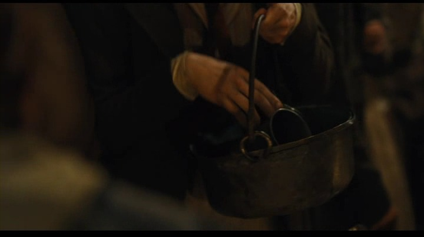 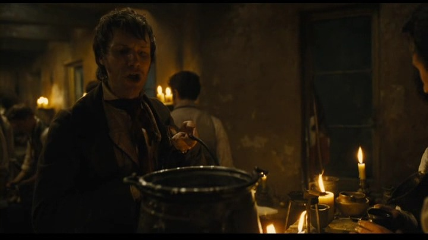
(저건 도가니도 아니고 그냥 냄비 같은데, 거기에 금속제 컵을 집어 넣고 녹인다고요 ? 그런데 그것이 정확한 고증이라는 거...)
고대 로마시대에는 납으로 컵을 만들었다고도 하지요. 녹이 슬지 않으니까요. 덕택에 사람들이 납 중독으로 많이들 죽었다고 하던데요. 실은 아직도 납 중독이라는 개념이 당시 프랑스 사람들에게 알려지지는 않은 상태였지만, 그래도 다행히 당시 서민들의 컵은 납이 아니라 주로 주석으로 만들었습니다. 원래 장발장이 미리엘 주교로부터 은접시를 훔쳐간 다음날, 은접시가 없어서 이제 무엇으로 음식을 먹냐고 식모가 투덜거리자 미리엘 주교가 주석 접시로 먹자고 하자, 식모인 마글루아르 부인이 '주석 접시에서는 냄새가 난다'고 투덜거렸지요. 그래서 귀족들은 은으로 식기류를 만들었던 것이지요. 그런데 주석으로도 총알을 만들 수 있나요 ? 예, 만들기도 합니다. 사실 주석의 녹는점은 231.93 °C로서, 납의 327.46 °C보다 더 낮습니다. 그리고 납에 주석을 조금 넣어서 합금을 만들면 훨씬 더 단단한 총알을 만들 수 있었기 때문에, 실제로도 당시 머스켓 볼은 순수 납이 아닌, 납과 주석, 그리고 안티몬 등을 섞은 합금으로 만들었습니다. 저도 당시 총알을 순수 납으로 만든 것이 아니라 납과 주석의 합금으로 만들었다는 것을 저 장면을 보고 처음 알았습니다.
어떻습니까 ? 이 정도면 여러분도 쉽게 탄약을 만들 수 있지 않겠습니까 ? 실제로 당시 1832년은 물론이고, 1830년의 7월 혁명이나 1848년의 2월 혁명 때도 파리 시민들은 자체적으로 이런 탄약을 제조했습니다. 레미제라블 본문을 보시지요.
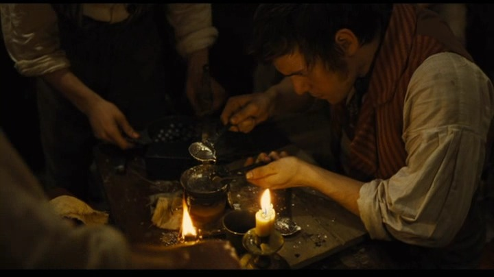
(녹인 주석과 납의 합금을 틀에 부어서 머스켓 볼을 만드는 장면입니다.)
---------------------------------------------
페르 라셰즈 묘지와 트론 성문 사이의 가장 호젓한 가로수길 가의 외호에서 아이들이 놀고 있다가 톱밥과 쓰레기 더미 아래에서 부대 하나를 발견했는데, 그 속에는 탄환 만드는 주형, 탄약포 만드는 데 쓰는 나무 굴대, 수렵용 화약 가루가 들어있는 그릇, 안에 납 녹인 흔적이 뚜렷한 작은 냄비 하나씩이 들어있었다. 경찰들이 아침 5시에 파르동이라는 사람의 집을 급습했는데, 이 사람은 후일 바리카드 메리 구의 소대원으로 있다가 1834년 4월 폭동 때 피살된 사람으로서, 경찰들은 그때 그가 침대 옆에 서서, 제조 중인 탄약포를 손에 쥐고 있는 것을 발견했다.
...중략...
그레브 강둑의 맞은편에서는 머스켓 소총으로 무장한 청년들이 총을 쏘기 위해 여자들의 집에서 진을 치고 있었다. 그들 중 하나는 발화륜 머스켓 (un mousquet à rouet)을 갖고 있었다. 그들은 초인종을 누르고 집 안으로 들어가 탄약을 만들기 시작했다. 그 여자들 중 한 사람은 이런 말을 했다. "나는 탄약(cartouches)이 무엇인지도 몰랐는데, 우리 집 양반이 그걸 가르쳐 주었어요."
---------------------------------------------
저 위에서 발화륜 머스켓이란 wheel-lock musket을 뜻하는 것으로서, 톱니바퀴를 돌려서 불꽃을 내는 방식의 훨씬 더 구식의 소총을 뜻합니다. 아무튼 저런 가정 주부도 만들 줄 아는 탄약포(cartridge)를 여러분이 못 만든다고 하면 좀 창피한 일 아니겠습니까 ? 문제는 사실 납이나 주석이 문제가 아니라, 바로 화약이지요. 당시 화약인 black powder, 즉 흑색 화약을 어떻게 만드나요 ? 하긴 전에 어떤 학생인 듯한 친구가 제 블로그에 '화약 만드는 법을 알려달라'고 써놓았길래, 제가 '손님 여기서 이러시면 곤란합니다' 라고 답글을 단 적이 있습니다만, 레미제라블 원작 소설에서는 화약 만드는 법까지도 그대로 나옵니다.
초석 ... 12 온스
유황 ... 2 온스
목탄 ... 2.5 온스
물 ... 2 온스
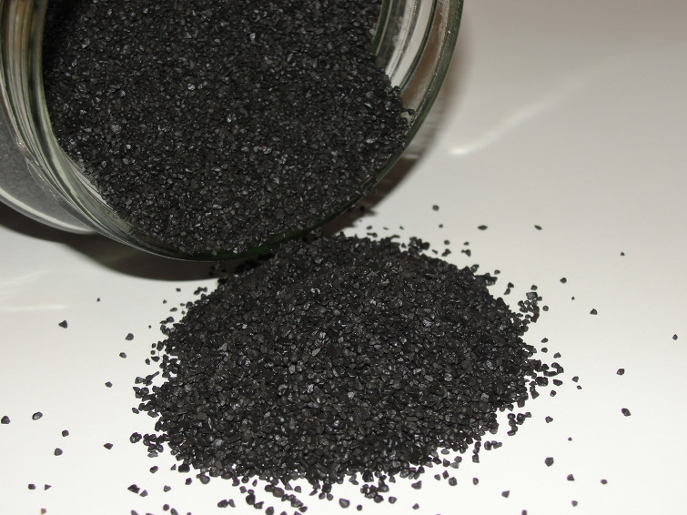
(흑색 화약의 주성분은 산화제 역할을 하는 흰색의 초석(saltpeter)입니다. 그래도 숯이 잔뜩 들어가 있어서 색이 검은 색이에요.)
사실 흑색 화약은 high explosive가 아니라 low explosive로서, 주된 폭발력은 목탄이 타들어가면서 목탄 속의 탄소가 산소와 결합하여 발생시키는 이산화탄소의 힘입니다. 다만 목탄을 공기 중에서 태우면 산소와 천천히 결합 - 즉 천천히 타므로 폭발이라고 말하기가 미안할 정도로 폭발력이 매우 약한데, 여기에 초석, 그러니까 질산칼륨(saltpeter, niter, KNO3)을 섞어서 불을 붙이면 질산칼륨이 열과 반응하여 목탄의 탄소에게 산소를 폭발적으로 공급해주므로, 강력한 폭발이 일어나는 것입니다. 유황을 첨가하는 이유는 이 화학 작용이 잘 일어나도록 안정제 역할을 하는 것입니다. 물은 왜 넣냐고요 ? 원래 흑색 화약이라는 것은 저 3가지 원료를 잘 섞어주면 되는 것인데, 시간이 지나면 저 3가지 성분이 무게 차이로 다시 조금씩 분리되어서 제 역할을 못하게 됩니다. 그러나 물을 약간 넣고 잘 개어서 말리면 혼합된 상태에서 굳어버리므로 저 원료들에 물을 첨가하여 빻고 갈고 개는 것입니다. 그 이상적인 비율은 저 위에 적힌 것 정도라고 합니다.
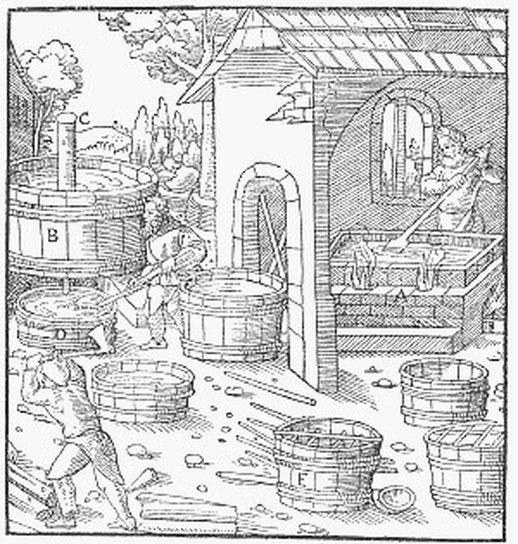
(16세기의 초석 공장입니다. 초석 공장은... 음... 암튼 냄새가 지독했다고만 이해하십쇼.)
이렇게 써놓으면 생각없으신 어린 학생분들이 그래서 질산칼륨이든 초석이든 그걸 어떻게 만드냐고 ! 라고 질문을 하실 것 같아서, 더 이상은 쓰지 않겠습니다. 다만 전통적인 방식은 퇴비(진짜 응아와 쉬로 만든 진짜 거름)하고 풀을 태운 재를 우려낸 잿물 등이 들어가는, 무척 냄새나는 과정이라고만 알아두십시요. 물론 요즘이야 화학 공장에서 원료를 쉽게 만듭니다. 그래서 테러리스트들이 폭탄 만들때 비료를 사가는 것이고요. 위험한 화약 이야기는 그만 하지요.
저렇게 탄약포를 만들고, 총을 사모으고 하는 것은 다 돈이 들어가는 일입니다. 전에 머스켓 소총의 경제학 (https://nasica1.tistory.com/155 참조)에서도 쓴 바가 있습니다만, 당시 제대로 만든 머스켓 소총의 민간 가격은 현재 우리나라 원화 가치로 약 150만원 수준이었습니다. 상당히 고가였지요. 서민들이 이런 고가품을 일일이 다 가질 수는 없었으므로, 폭동이 일어나면 일단 제일 먼저 털리는 것이 바로 시내 총포상이었습니다. 그렇지만 일단 폭동을 일으키려면 부족하더라도 총이 있기는 해야 했으므로, 이런 총을 모으는데 상당한 돈이 들어간 것은 사실입니다. 또 탄약을 만들기 위해 초석과 황, 납을 사들이는데도 돈이 들었지요. 영화 속에서도 저 술집 (영화 속에는 술집 이름이 Musin 뮤쟁으로 나오지만 그건 소설 속의 카페 이름이고, 소설 속에서는 Corinth 코랭트가 그 술집 이름입니다) 주인 아주머니도 청년들이 주석 컵을 가져가 녹이려고 하자 아까와하고, 의자를 가져다 바리케이드를 만드려 하자 저항하는 장면이 나옵니다. 영화 속에서야 잘 생긴 청년들이 키스로 아주머니를 달래면서 가져가는 것으로 나옵니다만, 실제 상황에서야 그러겠습니까 ?
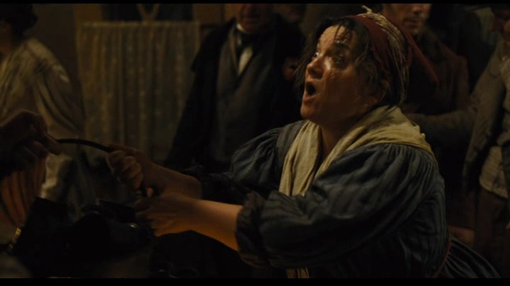 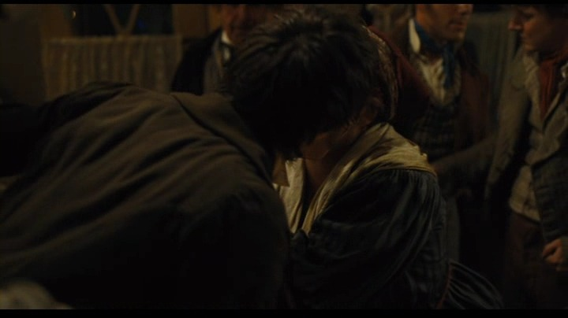
(소중한 살림인 주석 컵을 가져다 녹이겠다는데 주인 과부 아주머니가 놀라는 것은 당연합니다. 영화 속에서야 저렇게 잘 생긴 청년들이 키스를 해주며 은근슬쩍 넘어가지만 냉혹한 현실 세계에서는 그럴 리가 없지요.)
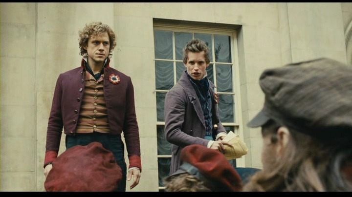 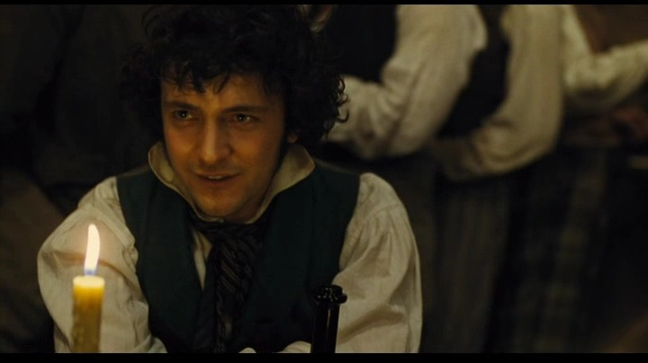 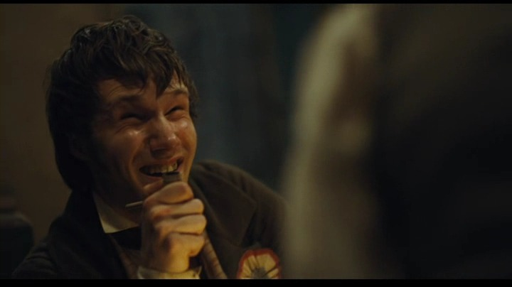 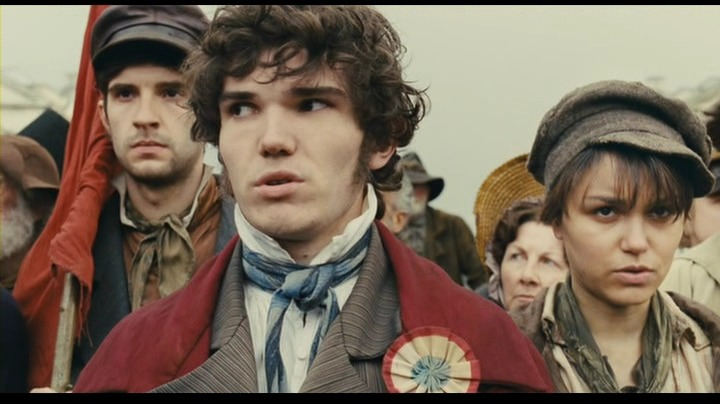
(그런데 가만히 보면 마리우스와 앙졸라, 그리고 너그럽게 봐주면 저 맨 위의 그랑테르까지만 봐줄 만한 미남이고, ABC의 벗들 중 그 외의 친구들은 사실 다 평균 이하의 추남이라는 것이 에러... 저 그랑테를 역을 맡은 배우는 외모도 출중하고 목소리도 좋은 것이, 아마도 오디션은 마리우스 또는 앙졸라 역으로 지원했다가 에디와 아론에게 밀려서 결국 그랑테르가 된 듯 해요.)
제 생각은 이렇습니다. 사람들이 오죽하면 저렇게 없는 재산 털고, 또 목숨까지 걸고 폭동을 일으키겠냐 하는 것이지요. 민중이란 유기체는 나름대로 합리적인 존재라서, 현재 조건이 만족스러우면 결코 위험을 무릅쓰지 않습니다. 레미제라블의 배경이 되는 1832년 파리 무장 봉기도 당시 흉작과 콜레라 유행으로 서민들의 삶이 몹시 피폐해진 것이 원인이 되었습니다. 광우병의 괴소문들처럼, 당시에도 '콜레라가 번지는 것은 정부가 빈민들을 없애기 위해 우물에 독을 풀고 있기 때문이다'라는 소문이 돌았습니다. 영화 속에서 얼굴도 못 내밀고 죽는 라마르크 장군도 그때 콜레라로 인해 목숨을 잃었을 정도였지요. (당시의 콜레라 판데믹에 대해서는 영국이 일으키고 세계가 피해를 본 판데믹 - 콜레라 이야기 참조) 제 블로그를 출입하시는 분들은 저를 좌익 진보주의자라고 생각하실지 모르겠습니다만, 사실 저는 한꺼풀 까놓고 보면 우익 보수주의자라고도 할 수 있습니다. 저는 사회에서 (비록 고용 불안정에 시달리는 대기업 월급쟁이이지만) 어느 정도 자리를 잡은 중산층이라고 자부하거든요. 저는 이 사회가 혁명에 휩쓸리는 바람에 제가 모아놓은 얼마 안되는 재산이 다 날아가거나, 제 직장이 망하는 것을 원하지 않습니다. 저는 계속 중산층으로 살고 싶고, 가급적이면 충분한 돈을 모아서 50세 이전에 은퇴해서 가족들과 해외 여행을 다니고 싶습니다. (원래 꿈은 40세 이전에 그러는 것이었는데, 세상이 만만치 않아서 그건 실패...) 그런 점에서는 저야말로 진짜 보수주의자입니다. 그런데 왜 제가 평소에 부자 증세 등을 외치는 좌익 빨갱이 노릇을 하냐고요 ? 바로 혁명을 원하지 않기 때문입니다.
(이 글은 2013년에 썼던 글을 재탕해서 올리는 것인데, 저는 이제 50을 넘었는데 아직도 회사를 다니고 있네요 ! 그때만 하더라도 코로나-19 때문에 온 세계가 뒤집어져서 회사를 때려치워도 세계 여행은 못가게 될거라는 예언을 들었다면 믿지 않았을 겁니다.)
부자 증세를 하면 아마 (부자는 아니지만) 저도 세금을 더 많이 내게 될 겁니다. 하지만 그것이 아까와서 못내겠다고 한다면, 저는 그 사람이 진짜 보수라고 생각하지 않습니다. 그건 그냥 욕심꾸러기 떼쟁이일 뿐이지요. 혁명이나 폭동을 없애는 가장 좋은 방법은 경찰력을 강화하는 것이 아니라, 빈민들에게 당장 먹을 것과 입을 것, 그리고 무엇보다도 일자리를 주는 것입니다. 만족한 민중은 결코 폭동이나 혁명을 일으키지 않습니다. 비유가 적절하지는 않습니다만, 레미제라블 속의 마리우스가 왜 무장 봉기에 참여한 줄 아십니까 ? 영화 속에서는 영국으로 떠나는 코제트를 따라 가야 하나, 형제들과도 같은 'ABC의 벗들'과 혁명에 참여해야 하나 고민하다가 결국 앙졸라에게 가는 것으로 나옵니다만, 소설 속에서는 이야기가 약간 다릅니다. (소설 속의 마리우스는 영화 속의 마리우스보다 훨씬 더 찌질한 놈팽이로 나옵니다.)
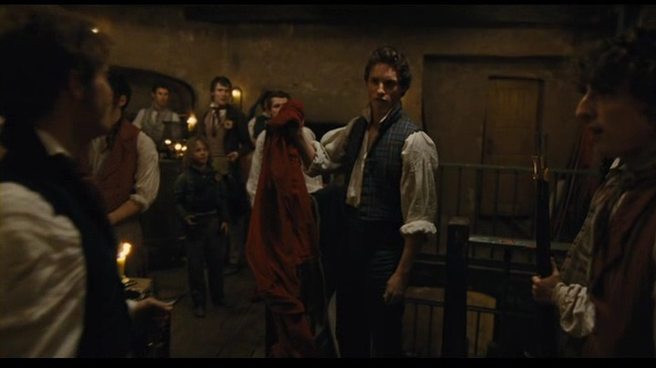
(마리우스가 붉은기를 들고 ABC의 벗들에게 다시 나타난 이유는 ? 철저한 빨갱이라서 ? 아닙니다. 돈이 없어서입니다.)
소설에서는 철없는 코제트가 마리우스에게 '나는 아버지를 따라 영국으로 가야 한다 그러니 너도 나와 함께 영국으로 가자' 라고 합니다. 그러자 코제트보다는 세상 물정을 잘 아는 마리우스가 절망에 빠지지요. '나는 영국으로 갈 배삯은 커녕 여권을 마련할 돈도 없다. 오히려 친구인 콩브페르에게 200프랑이나 되는 빚만 있을 뿐이다' 라고요. 원작 소설 속에서, 마리우스는 보나파르트 주의자로서, 공화주의자인 'ABC의 벗들'과 아주 친한 편은 아니었습니다. 물론 보나파르트 주의자가 왕정 폐지를 위한 혁명에 참여하는 것이 이상한 일은 아닙니다만, 마리우스는 그런 이상보다는 사실 '애인이 떠나는데, 그 뒤를 따라갈 돈이 없어서' 혁명에 참여했다고 보는 것이 맞습니다. 그런데, 사실 대부분의 사람들은 마리우스와 같습니다. 돈이 없기 때문에, 다른 희망이 없기 때문에 혁명과 폭동에 참여하는 것입니다. 영화에서는 전혀 나오지 않습니다만, 앙졸라의 바리케이드에서 제일 먼저 희생되는 마뵈프 할아버지는 사실 혁명에 참여할 만한 사람이 전혀 아니었습니다. 그 할아버지가 무장 봉기에 동참한 이유는 그저 '너무나 가난하여 어차피 더 이상 살아갈 방법이 없었기 때문'이었습니다. 가브로슈도 마찬가지이지요. 그는 거리의 부랑아로서, 내일 생각을 하고 사는 모범생 꼬마가 아니었습니다. 그러니 그냥 아무 생각없이 뛰어든 것이지요. 물론 부자집 외아들인 앙졸라처럼 오로지 공화주의의 이상에 불타서 몸을 던진 열혈 청년도 있겠지만, 빅토르 위고가 이 무장 봉기에 이렇게 어중이떠중이가 '어차피 막 가는 인생'을 이유로 참여하는 것으로 그린 것은, 소설적 이상주의보다는 오히려 당시의 현실을 더 반영한 것입니다. 긴 말을 짧게 줄이자면 이렇습니다. 빈곤을 없애고 빈부격차를 줄이는 것이 국가 안보에 매우 중요합니다. 어쩌면 이지스 구축함과 스텔스 전투기를 사들이는 것보다 더 중요합니다. 결국 외적과 맞서 싸우는 것은 무기가 아니라 사람인데, 국민들이 '왜 내가 부자들을 위해 목숨 바쳐 싸워야 하는가'라는 의문을 가지게 되면 그 사회는 끝나는 것입니다.
** 이 글은 2013년에 썼던 글을 목요일에 재탕하는 것입니다.